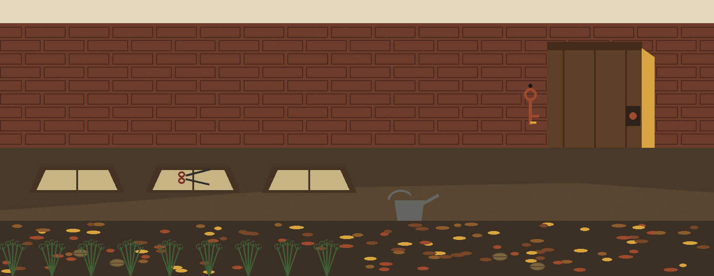
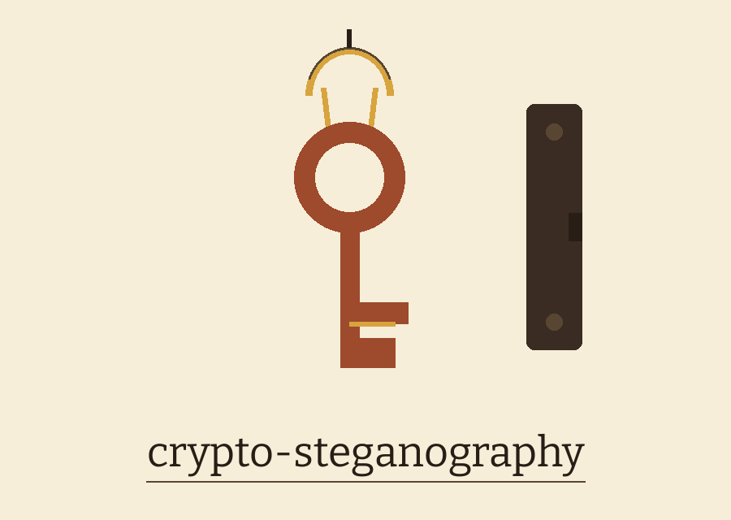
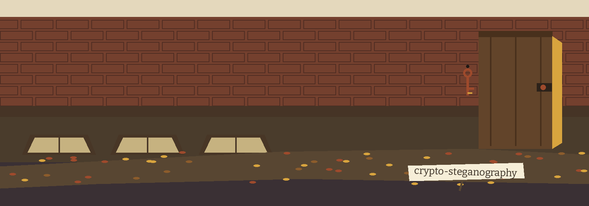
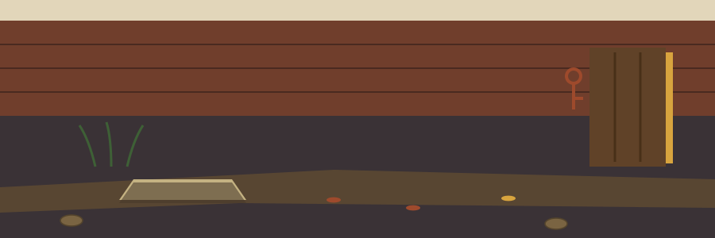

crypto-steganography: The Walled Garden Door Left Ajar



Encrypted Before It Is Hidden
Three Segments in a Fixed Order
One Bit per Pixel
PNG Out or Nothing
Too Small Means No File
First plate: the job
This command line tool hides text inside an image file. It can also pull that text back out. The hiding uses least significant bit steganography. The text is encrypted before it goes into the pixels, never after, never instead.
Second plate: the method in order
A fresh random salt of 16 bytes is made for each hide run. A 256 bit key is derived from the password and that salt with PBKDF2-HMAC-SHA256 at 390000 iterations. The derived key is base64 url safe encoded and handed to Fernet from the cryptography package, which encrypts the message. Three segments then go into the image, one bit per pixel, in a fixed order: the salt at 128 bits, then the length of the encrypted payload in bits held in a 32 bit field, then the encrypted payload itself. Inside each segment the colour channel cycles red, green, blue by bit position, and each new segment restarts that cycle at red. Extraction reverses the walk. It reads salt and length back, derives the same key from the password the caller gives, and decrypts.
Third plate: ground rules
Python 3 is required. So are Pillow at 10.0.0 or later and cryptography at 41.0.0 or later. The requirements file names both. Both packages are imported at the top of main.py. On a machine without them, even a plea for help stops at the import line. No help text prints.
Fourth plate: install
The install lines stand exactly as the README prints them in the preserved record below. Clone line first. Directory change next. Requirements install last. The clone line names ShadowGuard-AI, hyphenated, and it is correct. No flag is raised against it.
Fifth plate: the two working forms
Hide form: python3 main.py hide, then an image path, then the message, then the password. Extract form: python3 main.py extract, then an image path, then the password. Placeholders only. No real message is printed. No real password is printed. No path from any real machine is printed. Redaction note: the live README printed one concrete password value in its hide and extract examples. Both occurrences are redacted here and in the re-skinned README. The value itself is not printed on this page. Put your own password in that position.
Sixth plate: controls in parser order
The mode comes first. It is a subcommand choice, hide or extract. Under hide, three positionals follow in order: image, message, password. Under extract, two positionals follow: image, password. The help flag closes each form. A run with no mode prints the help text and exits 1.
Seventh plate: the hide station
The input image is converted to RGB, which drops an alpha channel from a source image without comment. The output is always a PNG file. Its name is the word hidden followed by the _ character and the input base name, with a png ending. It lands in the current working directory, not beside the source image. A file of that name already sitting there is overwritten with no prompt. A good run logs that the message was hidden and names the saved file. It then exits 0. The password and the message are encoded as utf-8 before use.
Eighth plate: the extract station
A good run prints the recovered text to stdout after the words Extracted message, and exits 0. A wrong password gives a decryption failure in the log and no recovered text, and the run exits 1. An image holding no valid hidden payload gives an error in the log and no recovered text, and that run also exits 1. An empty message hides fine, then fails at extraction: extract decrypts it correctly, tests the result, finds an empty string, and reports a decryption failure, exiting 1.
Ninth plate: the capacity sum
One bit rides on each pixel. The header takes 160 bits before any payload bit is placed. So the ceiling is the pixel count minus 160, counted in bits of encrypted data. The README works one case. A 200 by 200 pixel image holds at most 39840 bits, about 4980 bytes, and the Fernet token runs larger than the plain message it carries. Too small an image logs that the image is not large enough, writes no output file, and the run exits 1. Format warning at full size: lossy formats such as JPEG recompress pixels and destroy the hidden bits. Extract from the PNG output, never from a JPEG copy of it. No worked case in the README shows a message close to the capacity ceiling failing, although the sum is given; that gap is recorded here.
Last plate: licence and testing
There are no bundled tests. The hide and extract round trip was verified by hand. The README licence section carries a copyright line only, naming ShadowStrikeHQ. That line is recorded here as a fault in place: it does not match the organisation in the install line, and it names no licence. Beside it sits a separate fact. The repository LICENSE file carries the MIT License. Its holder line gives a pen name together with a single initial for the remaining name. That fact is recorded. The initial is not expanded.
The preserved README record, with the password value redacted
# crypto-steganography A command line tool that hides text inside an image file and extracts it again, using least significant bit (LSB) steganography. The text is encrypted before it is hidden. ## How it works - A random 16 byte salt is generated for each hide operation. - A 256 bit key is derived from the password and the salt with PBKDF2-HMAC-SHA256 (390000 iterations). - The message is encrypted with Fernet (from the `cryptography` package). - The salt (128 bits), the encrypted message length (32 bits), and the encrypted message are written one bit per pixel into the least significant bits of the image, in that order. - Extraction reads the salt and length back, derives the same key from the supplied password, and decrypts the message. ## Requirements - Python 3 - Pillow and cryptography, listed in `requirements.txt` ## Install ```bash git clone https://github.com/ShadowGuard-AI/crypto-steganography.git cd crypto-steganography pip install -r requirements.txt ``` ## Usage Hide a message: ```bash python3 main.py hide test.png "hello secret world" REDACTED ``` This writes `hidden_test.png` in the current directory and logs `Message hidden successfully. Image saved as hidden_test.png`. Extract a message: ```bash python3 main.py extract hidden_test.png REDACTED ``` On success this prints, for the example above: ```text Extracted message: hello secret world ``` Show help: ```bash python3 main.py --help python3 main.py hide --help python3 main.py extract --help ``` ## Parameters - `hide <image> <message> <password>`: hide `message` in `image`, protected by `password`. - `extract <image> <password>`: extract the hidden message from `image` using `password`. - `-h`, `--help`: show help and exit. ## Limitations - Output is always saved as a PNG file named `hidden_<original base name>.png` in the current directory, whatever the input format was. PNG is required because lossy formats such as JPEG recompress pixels and destroy the hidden data. Extract from the PNG output, not from a JPEG copy of it. - Capacity is one bit per pixel, minus a 160 bit header (salt plus length). A 200 by 200 pixel image therefore holds at most 39840 bits, about 4980 bytes, of encrypted data, and the Fernet token is larger than the plain message. Hiding into an image that is too small logs `Error: Image is not large enough to hide the message.` and writes no output file. - A wrong password logs a decryption failure and prints no extracted message. - Extracting from an image that contains no valid hidden message logs an error and prints no extracted message. - There are no bundled tests. The hide and extract round trip above was verified by hand. ## License Copyright (c) ShadowStrikeHQ ## Diagrams and maps I drew the system out in [crypto-steganography-Visuals](crypto-steganography-Visuals/): an architecture diagram, a data-flow diagram of the three segment layout, a flowchart of a run, and a product map, with the written product map, statistics with citations, and the roadmap in [VISUAL.md](crypto-steganography-Visuals/VISUAL.md). Every sheet also ships as a PNG photograph of the paper page beside its SVG.